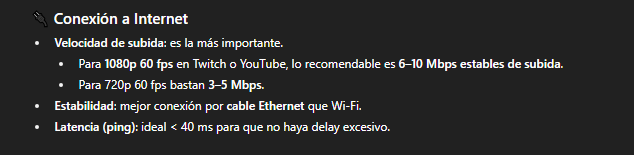
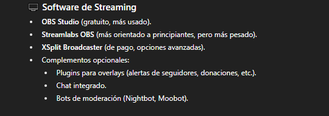
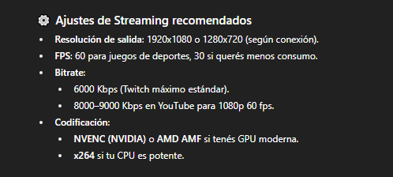
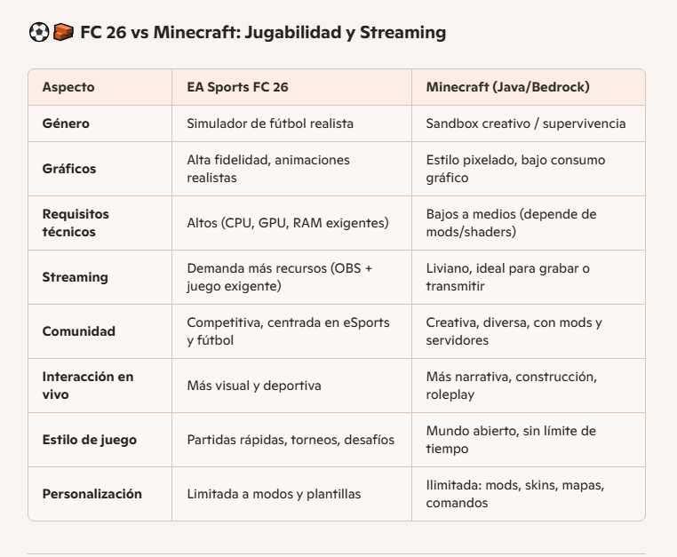
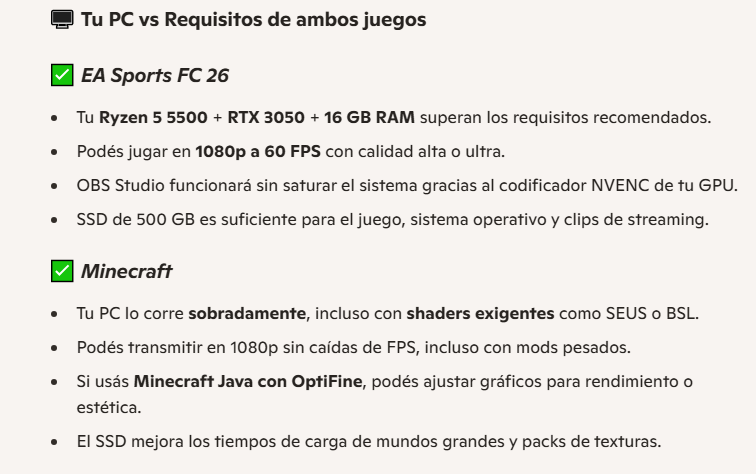
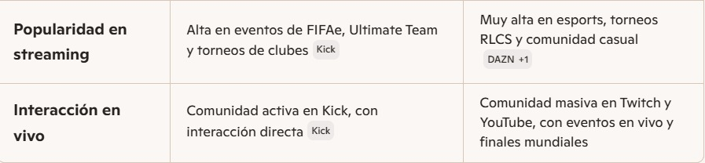
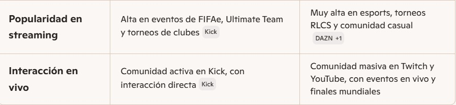
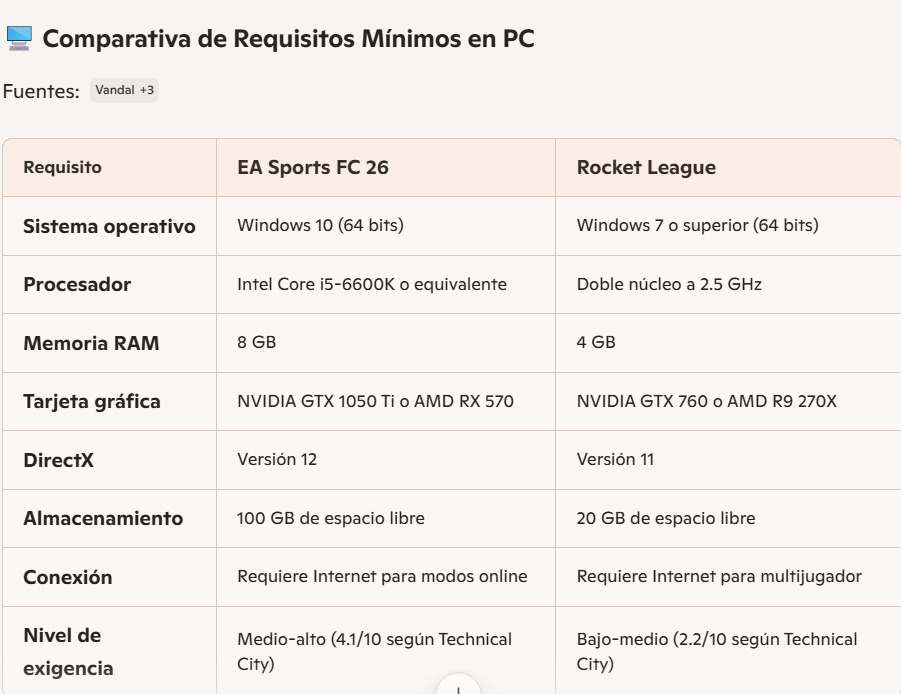
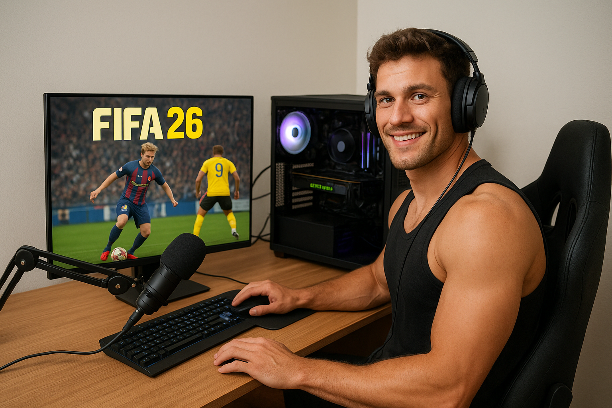

Carátula del Trabajo.
• Universidad: Universidad Autónoma de Entre Ríos
• Facultad: Facultad de Ciencias y Tecnologías
• Carrera: Licenciatura en Sistemas de Información
• Cátedra: Fundamentos de Computación
• Trabajo Práctico: Trabajo Práctico N°1 “Streaming de videojuegos”
• Profesores: Bioing. Ismael Cassi ; Lic. Paolo Orundés Cardinali
• Integrantes del Grupo: Brunelli Julián; Gutierrez Santos; Valenti Jerónimo.
• Comisión: 4
• Fecha de Entrega: 31 de Octubre
• Año Lectivo: 2025
JUEGO ELEGIDO: EA Sports FC 26
El FC 26 es un simulador de fùtbol muy popular a nivel mundial, con millones de usuarios. Es la continuación de la saga "FIFA", siendo esta la entrega mas reciente ya que sale a la venta recién este viernes 26 de septiembre.
Su género es "Simulador deportivo", puede jugarse en varias plataformas (pc, PlayStation, Xbox, Nintendo), y tiene varios modos de juego, ya sea individual o multijugador grupal, lo que permite jugar partidos contra la ia o entre amigos, o multijugador global, que permite jugar partidos contra personas de todo el mundo.
También cuenta con un modo carrera, en el que puedes tener la carrera de un director técnico o jugador, y el modo Ultimate team, que es un modo competitivo online en donde armas tu equipo y compites contra otras personas.
REQUERIMIENTOS MÍNIMOS y RECOMENDADOS:

Requerimientos mínimos y recomendados según Steam


Requerimiento mínimo según IA Copilot Requerimiento recomendado segun IA Copilot

Requerimientos mínimos y recomendados según ChatGPT
Para correr EA Sports FC 26 en la pc, se debe contar con un sistema operativo moderno de 64 bits, como Windows 10 u 11, actualizado a su última versión. En cuanto al procesador, se recomienda uno de gama media con múltiples núcleos, capaz de manejar tareas simultáneas como el juego y otras aplicaciones en segundo plano. Para los requisitos mínimos, alcanza con un procesador básico de cuatro núcleos, mientras que para un rendimiento óptimo en 1080p, lo ideal es uno de seis u ocho núcleos con buen rendimiento por hilo.
Respecto a la memoria RAM, el juego requiere al menos 8 GB para funcionar correctamente, aunque se recomienda tener 12 GB o más para evitar saturaciones, especialmente si pensás transmitir o grabar mientras jugás. En cuanto a la tarjeta gráfica, se necesita una placa dedicada con al menos 4 GB de memoria de video para jugar en calidad baja o media, mientras que para calidad alta o ultra en Full HD, lo ideal es una GPU de gama media con 6 GB o más de VRAM.
También es importante contar con al menos 100 GB de espacio libre en disco, preferentemente en una unidad de estado sólido (SSD), para asegurar tiempos de carga rápidos y fluidez general. Finalmente, una conexión a internet estable es esencial para los modos en línea y para mantener el juego actualizado.
NECESIDADES ADICIONALES PARA TRANSMISION:
Internet: Es fundamental tener una velocidad de subida mínima de 6 Mbps para transmitir en 1080p a 60 FPS. Si querés mayor calidad o transmitir en 2K, lo ideal sería tener 10 Mbps o más. Además, usá conexión por cable en lugar de Wi-Fi para evitar cortes o fluctuaciones.
Software de transmisión: El más recomendado es OBS Studio, gratuito y compatible con Windows. Permite usar codificación por hardware (NVENC si tenés GPU NVIDIA), lo que libera al procesador y mejora el rendimiento.
Configuración del stream: La resolución a 1920x1080 con una tasa de cuadros de 60 FPS, y activar el modo de prioridad alta en el proceso de OBS para evitar caídas de rendimiento.
IMAGENES DEL JUEGO:
OTROS JUEGOS EVALUADOS:
1) MINECRAFT:
Es un juego de construcción y aventura en un mundo abierto, donde los jugadores pueden explorar, recolectar recursos, construir estructuras y sobrevivir a criaturas. Tiene varios modos de juego, incluyendo supervivencia, creativo y multijugador. Es muy popular entre todas las edades debido a su jugabilidad sencilla pero profunda.
En resumen, son dos juegos completamente distintos, mientras que uno es un simulador de futbol, es otro es de supervivencia y construcción. El streaming de Minecraft es muy popular también, y bastante antiguo ya, además su público es muy amplio.
En cuanto a rendimiento, Minecraft utiliza muchísimos menos recursos que el Fc 26, por lo que no es necesario tener una pc demasiado potente para correrlo.
2) ROCKET LEAGUE:
Es un juego de deportes y acción que combina fútbol con vehículos propulsados por cohetes. Los jugadores controlan autos para golpear una pelota gigante y marcar goles en el campo del equipo contrario. Tiene modos de juego tanto individuales como multijugador, y es conocido por su jugabilidad rápida y competitiva.
 

El videojuego EA Sport FC26 busca ofrecer una una experiencia mas realista en el enfoque táctico, simulación y profesional, mientras que Rocket League propone un estilo arcade rápido y accesible , donde vehículos compiten en alto rendimiento, este juego destaca mas por su dinamismo. Ambos juegos destacan en el mundo del stream y del esport
En cuanto a rendimiento el FC26 exige mas recursos: una CPU mas moderna, mas RAM y mas espacio en el diso duro, mientras que el rocket es mas liviano, es mas accesibles para PCs de gama media o baja, y ambos necesitan conexión estbale para su jugabilidad online, aunque el FC26 se mas exigente.
Título de la imágen: "Objetivo de vida"
Explicación: para realizar esta imágen usamos chat gpt, y el mensaje que quisimos transmitir es como seria una vida sin preocupaciones ni problemas.